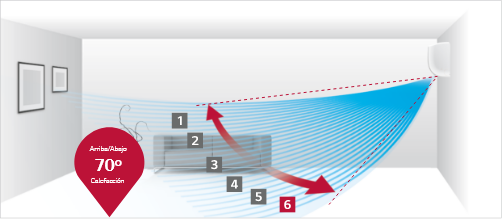
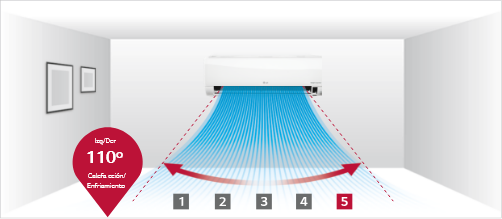

6 VÍAS DE OSCILACIÓN
¿Cómo funciona?
6 Movimientos de ventila. Hasta 70º
La ventila, que se mueve de arriba hacia abajo, tiene 6 configuraciones diferentes, incluyendo
la oscilación automática completa.

5 Movimientos de control horizontal. Hasta 55º
La rejilla, se mueve de izquierda a derecha, tiene
5 diferentes configuraciones, incluyendo la oscilación automática completa.
